正装上装
西装外套／商务西装
男士＋西装外套／商务西装＋扣型／版型＋材质／功能＋颜色／纹样＋场合＋季节
示例：男士纯色修身单排扣西装外套，适合商务办公、婚礼及正式场合，春秋穿着
商品链接优化
不要同时修改标题、主图、价格和详情页。先根据商品表现缩小问题范围，再按对应清单逐项检查。
先让平台准确识别商品，再补充真实且有区分度的属性。
基础款至少覆盖这四项，核心品类词尽量靠前。
男士＋西装外套／商务西装＋扣型／版型＋材质／功能＋颜色／纹样＋场合＋季节
示例：男士纯色修身单排扣西装外套，适合商务办公、婚礼及正式场合，春秋穿着
男士＋西裤／正装裤＋裤型／版型＋功能／面料＋腰头／褶型／纹样＋场合
示例：男士弹力直筒商务西裤，平整无褶设计，适合办公、婚礼及正式场合
男士＋西装马甲／正装马甲＋领型／扣型／版型＋材质／纹样＋场合
示例：男士修身V领单排扣西装马甲，后腰可调节，适合商务、婚礼及正式穿着
男士＋件数＋西装套装＋套装组成＋版型／扣型＋材质／纹样＋场合
示例：男士修身单排扣三件套西装，含西装外套、马甲和西裤，适合婚礼、宴会及商务场合
男士＋商务衬衫／正装衬衫＋袖长／版型＋真实材质／功能＋领型／颜色／纹样＋场合＋季节
示例：男士长袖弹力商务衬衫，标准合体版型，适合办公、婚礼及正式场合穿着
主图负责突出卖点、吸引点击；轮播图继续展示产品特点，帮助消费者建立购买兴趣。
主图优化：先让消费者愿意点进来。主图既要看清商品，也要迅速表达款式最有吸引力的部分。
第一眼能看出款式特色或商品的核心优势。
商品或模特占比合理，避免背景装饰干扰。
按类目展示肩型、腰身、裤型或套装比例。
颜色、面料、版型和套装件数须与实物一致。
| 类目 | 建议构图 | 优先卖点 | 示例图 |
|---|---|---|---|
| 正装上装 | 上半身或四分之三身 | 肩型、领型、门襟和腰身 | 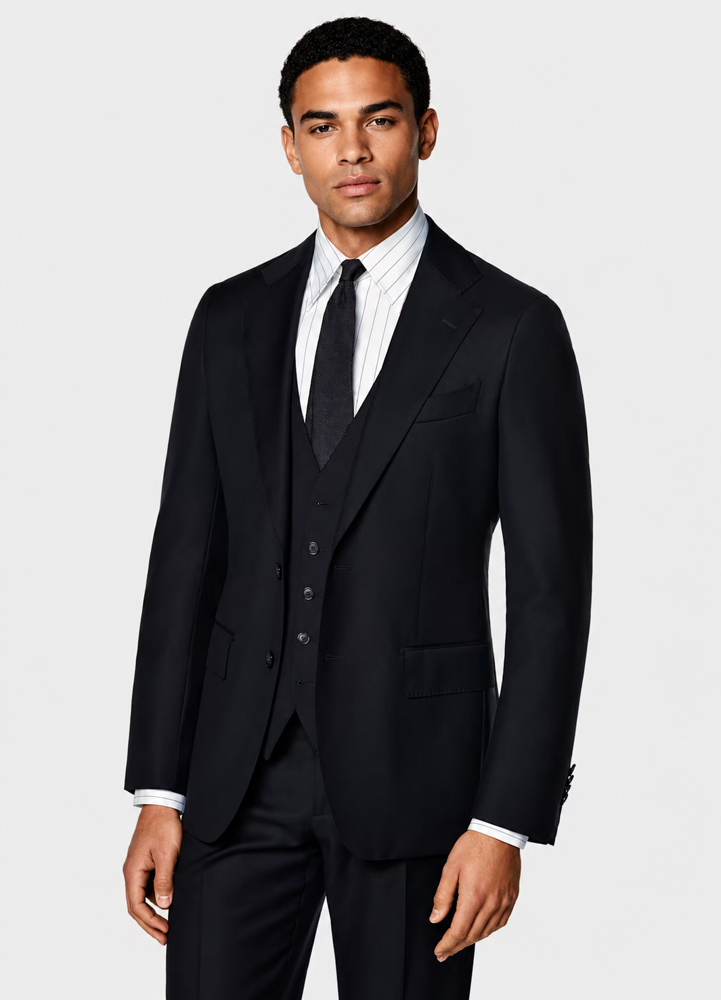 |
| 正装套装 | 正面全身构图 | 套装组成与上下装整体比例 | 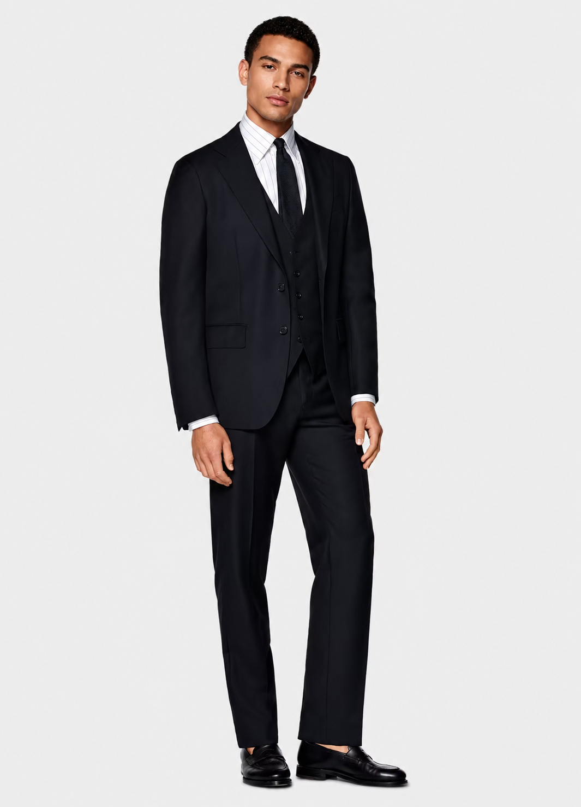 |
| 正装马甲 | 正面上半身 | 领型、扣型、下摆和贴合度 | 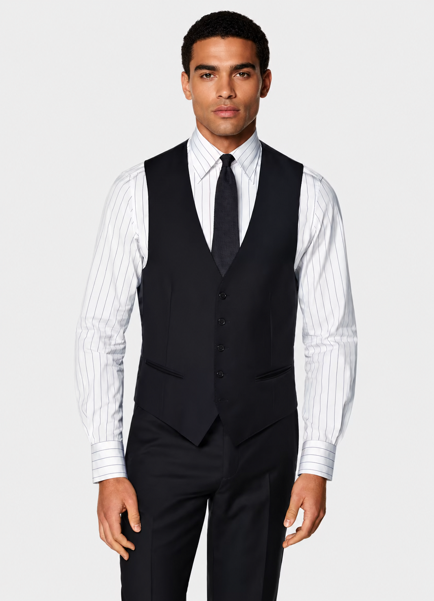 |
| 正装下装 | 腰部至鞋面 | 腰头、裤型、裤长和垂感 | 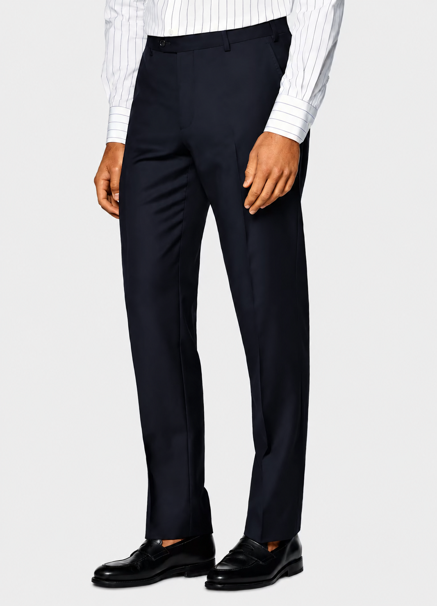 |
| 商务衬衫 | 下巴至腰部 | 领型、门襟、袖口和面料质感 | 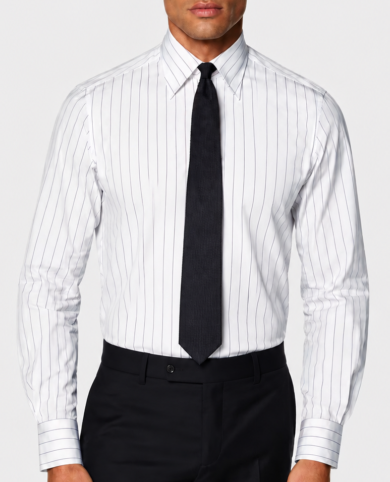 |
前面的图片优先放最有吸引力的内容，后续再根据商品特点灵活取舍和排序。
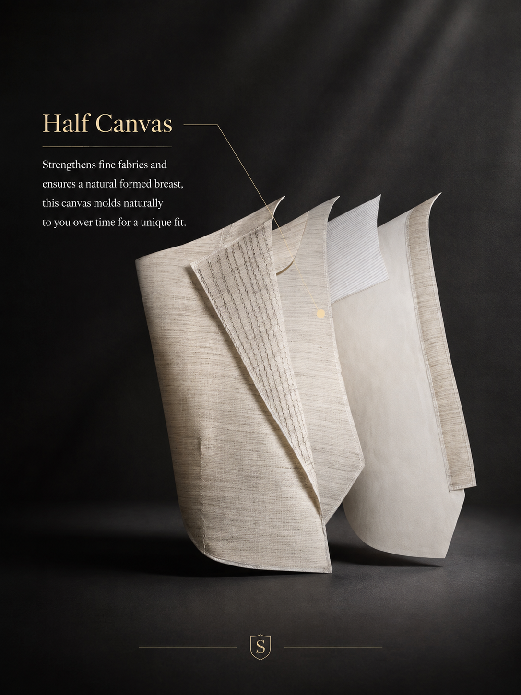
核心卖点图第一眼形成差异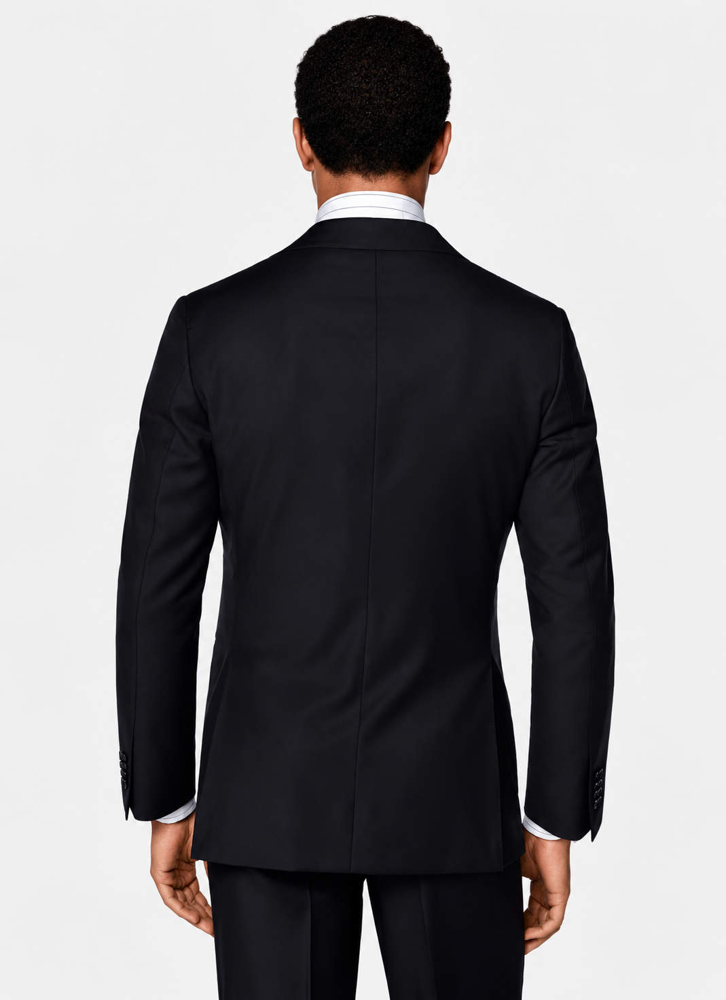
版型效果图正面／侧面／背面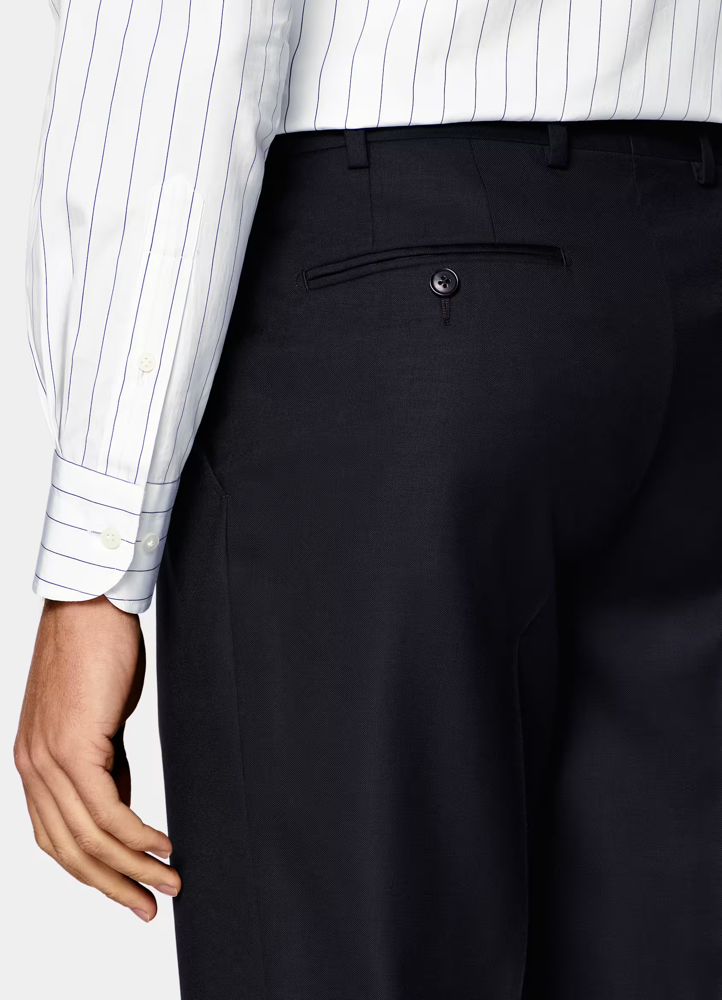
关键细节图展示差异化设计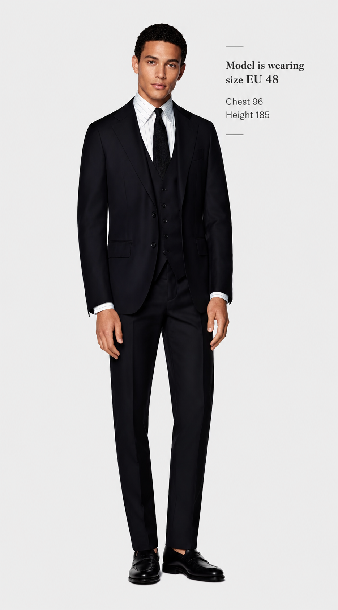
尺码辅助图降低选择疑虑用清晰顺序和真实依据，消除消费者对套装组成、版型、尺码和面料的疑虑。
明确品类、颜色、包含件数及每一件单品，避免消费者误解售卖内容。
展示正面、侧面和背面，并说明修身、标准或宽松及模特穿着尺码。
提供准确尺码表、测量方法和选码提示，关键部位使用成衣尺寸。
写明真实成分，并用近景展示纹理、厚薄、垂感和弹力等可验证特点。
围绕领型、门襟、口袋、腰头和袖口，解释其造型或穿着价值。
说明适用场合、建议搭配和基础护理方式，帮助消费者判断是否适合。
案例由卖点标注逐步延伸到多角度、面料、体型、搭配和场景。点击图片可查看完整尺寸。
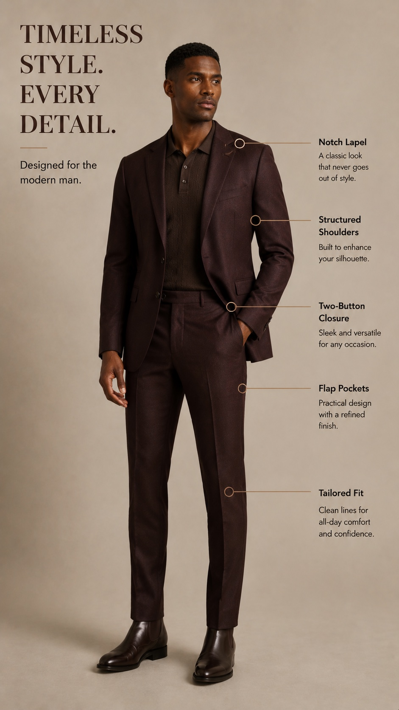
使用完整人物图，以少量标记解释领型、肩型、扣型、口袋和整体版型。
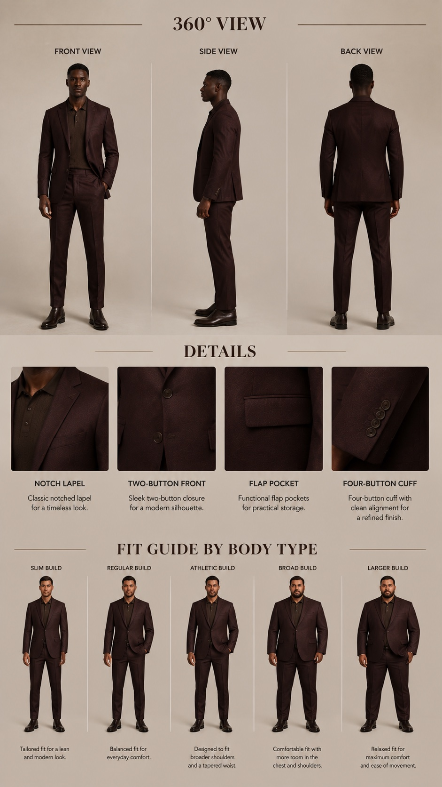
用正面、侧面、背面和局部特写证明版型，再用体型示意辅助消费者理解穿着效果。
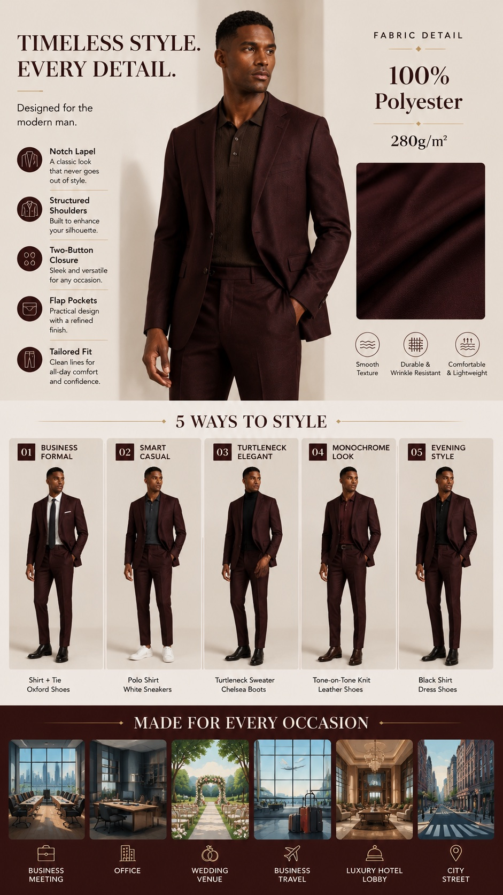
展示真实面料依据，并通过多套搭配和不同场景帮助消费者判断使用范围。
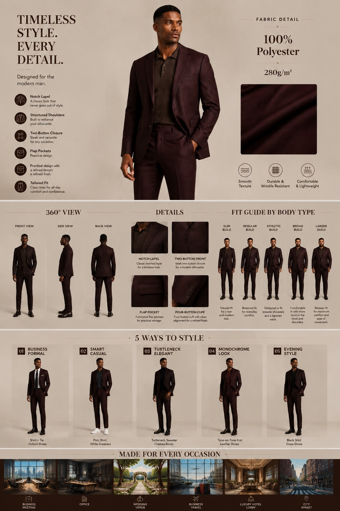
保持同一商品与视觉语言，依次组织面料、三视图、细节、体型、搭配和场景。
制作注意：延展图片应保持商品、模特与背景逻辑一致；卖点文字简短准确。体型示意只用于辅助理解，实际选码仍以真实成衣尺寸和平台尺码信息为准。
减少退货：图片、标题、属性、尺码表和实物必须保持一致。无法从商品或检测资料确认的信息，不要使用绝对化描述。
一次优先解决一个主要问题，记录修改内容，并检查基础信息是否完整。
| 商品表现 | 优先检查 | 建议动作 |
|---|---|---|
| 曝光低 | 类目、标题、属性、价格 | 先修正基础信息，避免频繁换图 |
| 曝光正常，点击低 | 主图、价格、款式竞争力 | 优先只调整主图或价格中的一项 |
| 点击正常，转化低 | 详情、尺码、评价和一致性 | 补充购买依据，检查描述偏差 |
| 修改后下降 | 修改时间和具体内容 | 停止连续修改，对照修改前版本 |
| 退货偏高 | 尺码、面料、版型描述 | 根据反馈修正信息并减少误解 |
类目与商品实际类型保持一致
标题包含准确的核心品类词
材质、功能和件数没有夸大
主图能够清楚判断商品版型
轮播图包含面料与关键细节
详情页提供尺码与测量方式
图片、标题、属性和实物一致
修改商品时记录内容和时间